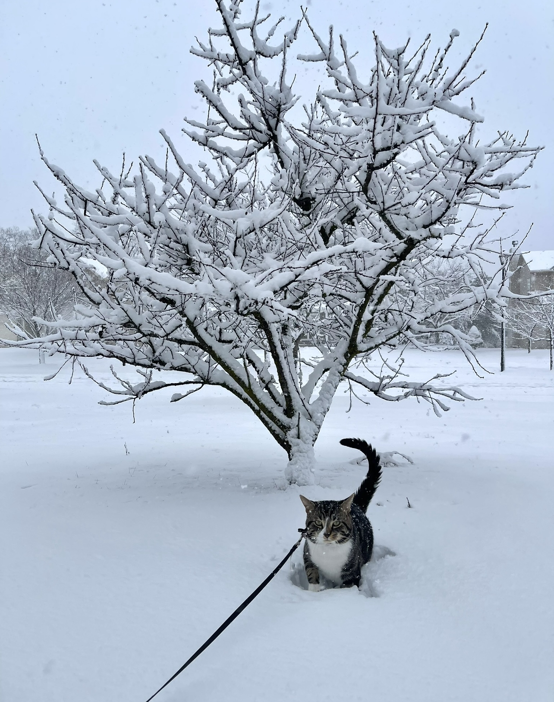
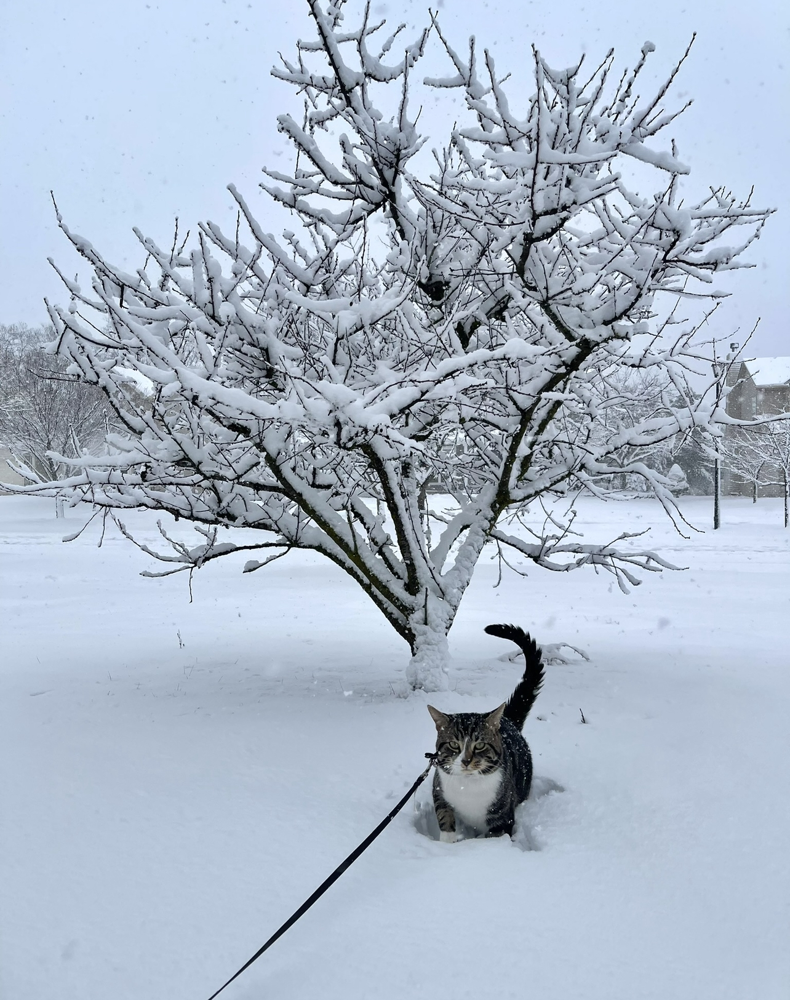

Pets
Bear!

Bear is a lazy, food-loving dog that is sometimes playful. His favorite activity is lying in the sun on his side and lounging. He enjoys playing with his toys and loves to fetch them when you throw them, but eventually, he gets bored and just stops fetching them and lays down.
Bear is also scared of a lot of things. He does not like water (showers and even rain) or getting his nails clipped, and he is sometimes even so lazy that he will just stop walking and sit down until you turn around and go back home.
Photo Gallery


Likes
- Food
- Laying in Bed
- Fetch
Honey!

Honey's favorite thing in the world is swimming. Even if it is the middle of January and half of the lake is frozen, Honey will be in the water. She is a smart swimmer, so when my brother and I go underwater, she will follow our air bubbles and be waiting for us when we come up for air.
While most dogs like to chase balls or sticks, Honey likes to chase rocks. She will even chase rocks into the water and stick h er whole face in the water to try and find the rock thrown. Chasing rocks is her main form of exercise right now as she refuses to go on walks from our house. If we drive her to another spot and walk from there, Honey will go on a walk but she refuses to leave our driveway when we try to walk from home. Finally one other Honey-ism is that her safe place is bathtubs. Many times our family has woken up in the middle of the night and found Honey is a bathtub.
Photo Gallery


Likes
- Rocks
- Attention
- food
York!

York loves to stay active and go on long walks by his house. He also enjoys chewing on his large assortment of toys. His favorite toy is his squeaky pig. York's favorite food is sausage, but cheese is another favorite.
York is a very sociable dog and is a licensed therapy dog. He frequently visits nursing homes and other places in an attempt to raise peoples' spirits. When it comes to bedtime, York prefers to sleep alone in his favorite blue dog bed. He will always be the first to get up in the morning.
Photo Gallery


Likes
- Food
- Playing
- Toys
Jingle!

Jingle loves going outside. He used to be an outdoor/indoor cat until we realized that he loved to get injured. Now, we take him on walks with a leash which he loves! Every time he sees me carrying the leash he goes crazy and meows to go out.
Jingle is very mischievous, he has gotten into many different accidents. His first accident was outside; a bee stung his paw and he cried all night long. The second one was ALSO outside, he got stuck on a tree for four days. Finally, he came back home one day with his tail bleeding and ripped out.
Photo Gallery

 


Likes
- being pet
- eating treat
- going on walks
Biscuit!

Biscuit is a 2 year old shiba inu dog. Shiba inus are energetic and playful dogs. Biscuit enjoys running outside in circles and then laying down in the grass in the sun for hours. He also likes going for occasional swims.
As energetic as Biscuit is, he also likes to relax. He loves to sleep in his dog bed and watch Netflix with his owners. His favorite treat is apples.
Photo Gallery


Likes
- Going for walks
- Swimming
- Apples
Jojo!

Jojo is a 14 year old dog that has grown up with me. He’s a Lhasa-Apso which is a breed from Tibet that’s known to be a watchdog. Funny enough, Jojo acts exactly like a watchdog. He likes to spend his days sitting next to a window looking and barking at people passing by. He is only a watchdog though, as he gets scared very easily.
His favorite thing in life is food and his favorite foods are sweet potatoes and naan. He loves walks as well, however he will not go outside if it’s raining or if there’s a lot of snow on the ground. He’s taken some old blankets and pillows we had to make his own bed. He’s also trilingual, able to understand English, Hindi, and Japanese.
Photo Gallery


Likes
- Being carried like a baby
- Walks
- Sleeping
Subin!

One of my earliest memories was spending time with a newly born Subin, So in a way, we grew up together. Therefore, from going to the store at the end of the road to eating together, we did everything together.
Subin was somehow not bothered by vaccum cleaners. Even though the loudness of it was able to scare any animals away, Subin enjoyed the chaos of it, opting to even sit on the handle as we vaccum.
Photo Gallery


Likes
- Hitting people's faces
- Sleeping under the sun
- Sleeping